A PAGE FROM THE NOTEBOOK
【確率】天気予報の「降水確率30%」ってどういう意味？
#気象#天気予報#降水確率#確率#雑学IN THIS NOTE
この記事でわかること
気象庁の定義と30%の読み方
気象庁の予報用語では、降水確率を「予報区内で一定の時間内に降水量にして1mm以上の雨または雪の降る確率の平均値」と定めています。表し方は0、10、20…100%の10%刻みで、その間の値は四捨五入します。備考には「30%とは、30%という予報が100回発表されたとき、そのうちおよそ30回は1mm以上の降水があるという意味であり、降水量を予報するものではない」と書かれています。つまり30%は、「明日の6～12時」のような決まった対象時間について、1mm以上降る可能性を予測した数字です。過去に降った割合そのものではありません。予報が正しいかどうかは、同じ30%と出した予報をたくさん集め、実際に降った割合が3割に近いかで検証します。
この定義からは、見落としやすい点が3つ読み取れます。1つ目は「1mm以上」という線です。気象庁は、降水確率は1mm以上の降水を対象にしているので、1mm未満の降水が予想される場合は「降水確率0%」でもよいとしています。小雨がぱらついて1mmに届かなければ、確率の上では「降らなかった」側に数えられます。2つ目は対象時間です。予報用語では、降水確率予報の対象時間を短期予報は6時間、週間予報は24時間と決めています。同じ30%でも、6時間の30%と1日の30%では意味が違います。また、「30%なら6時間のうち3割の時間に降る」という読み方は、定義と合いません。
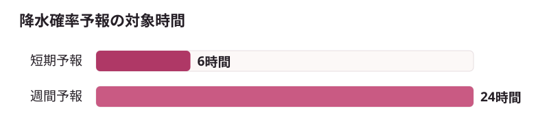
3つ目は四捨五入です。気象庁は「降水確率0%」を「降水確率が5%未満のこと」と説明しています。0%は確率がゼロという意味ではないので、0%の日に雨にあたっても予報が外れたとは言いきれません。同じ考え方で、30%は25%以上35%未満の幅を1つの数字にまとめたものです。また定義には「予報区内…の平均値」とあり、広い予報区の中で、場所によって降りやすさが違っても1つの数字にまとめられています。自分のいる地点の確率がちょうど30%だとは限りません。
最後に、量との関係です。気象庁は降水確率が「降水量を予報するものではない」とはっきり書いています。そのため、確率30%で短時間に強い雨が降ることも、確率80%で弱い雨が少し降るだけのこともあり、どちらも定義に反しません。雨の強さや量を知りたいときは、降水確率ではなく、雨量の予報や注意報・警報を見る必要があります。動画で説明するときは、「降るかどうか（1mm以上）」と「どのくらい降るか」を別の物差しとして分けて示すと、誤解を防げます。
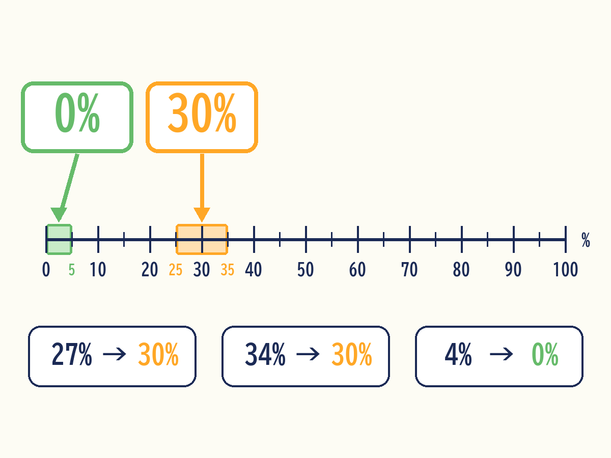
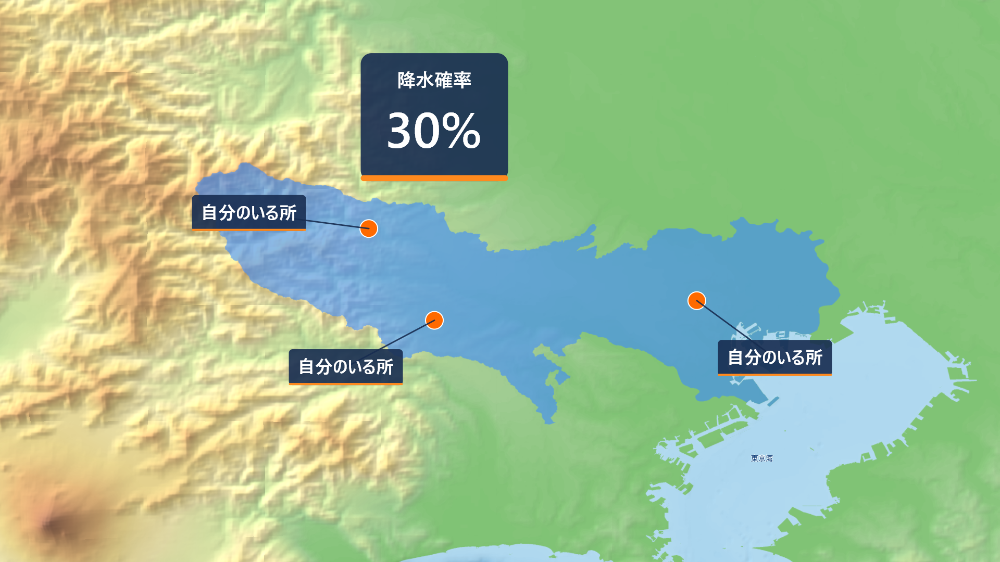
雨の強さは降水確率では分からない
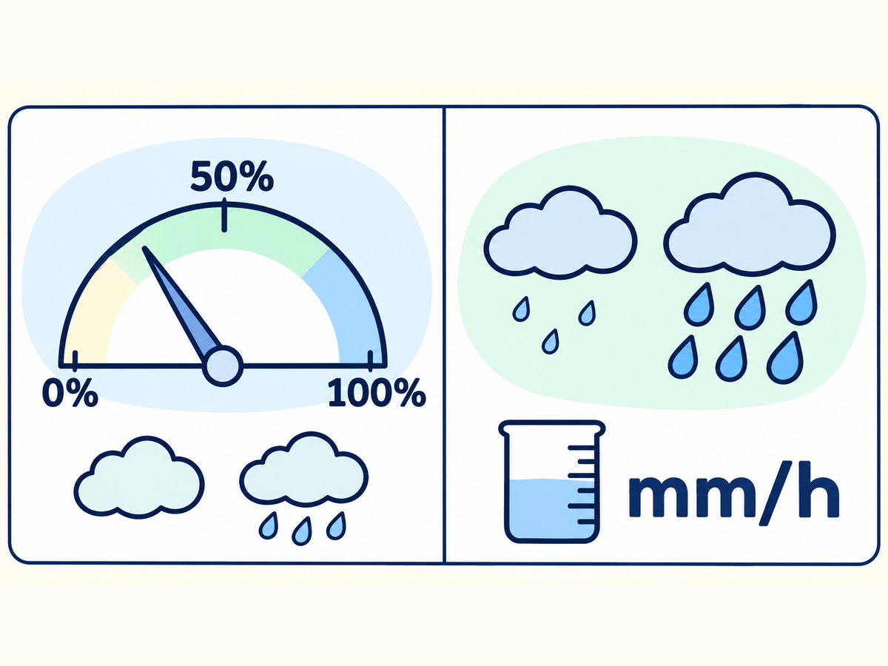
降水確率は、雨の強さや量を表す数字ではありません。30%でも、短い時間に強い雨が降ることがあります。反対に80%でも、弱い雨が少し降るだけで終わることもあります。
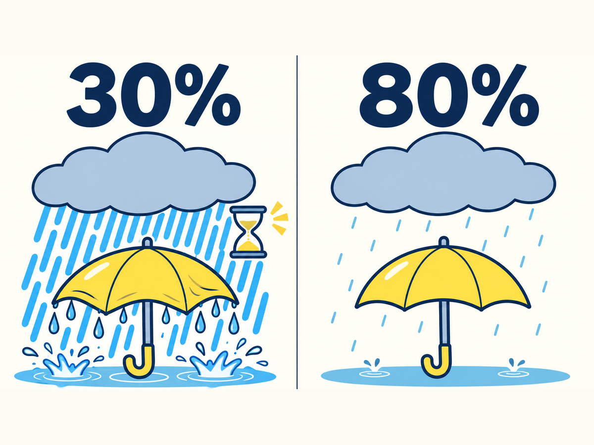
雨の強さや量を知りたいときは、雨量予報や、大雨の注意報・警報を見ます。
「時間の3割」は誤り：誤解と米国の数え方
「30%の雨」の受け取り方が人によって違うことは、研究でも確かめられています。ギゲレンツァーらは2005年の論文で、アムステルダム、アテネ、ベルリン、ミラノ、ニューヨークの5都市の通行人に「明日の雨の確率30%」の意味を尋ねました。気象学での正しい読み方である「同じような日の10日に3日くらい降る」を選んだ人が多数だったのはニューヨークだけでした。ヨーロッパの4都市では、この正しい読み方がいちばん「ふさわしくない」と判断されていました。
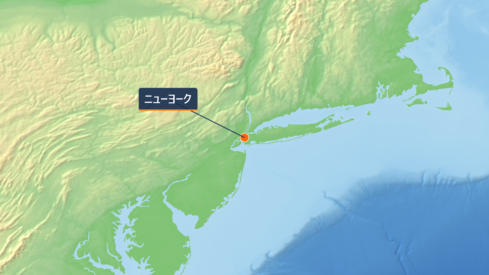
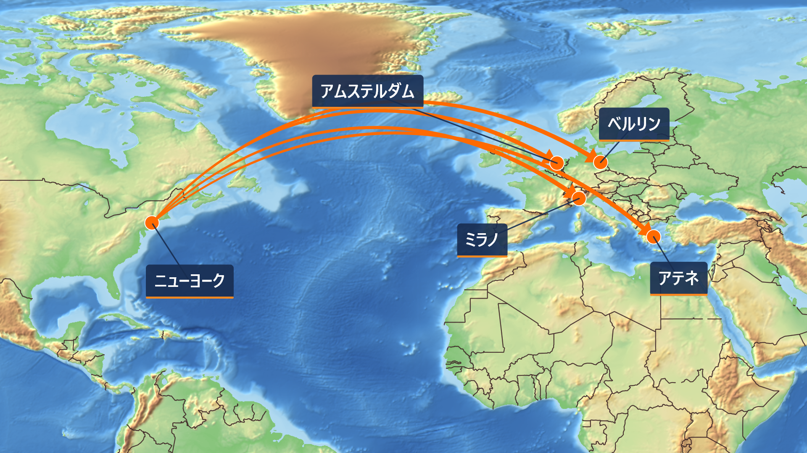
ヨーロッパの都市でいちばん多かった答えは「その日の30%の時間、雨が降る」で、次が「地域の30%の範囲で雨が降る」でした。著者たちは、こうした誤解が生まれる原因を、1回きりの出来事に付けた確率には「何に対する30%なのか」という基準（参照クラス）が書かれていないことにあると考えました。そのうえで、専門家は確率を伝えるときに基準をはっきり示すべきだと提言しています。日本の気象庁が「100回発表したら約30回」という言い方をしているのは、まさにこの基準を示している例と言えます。
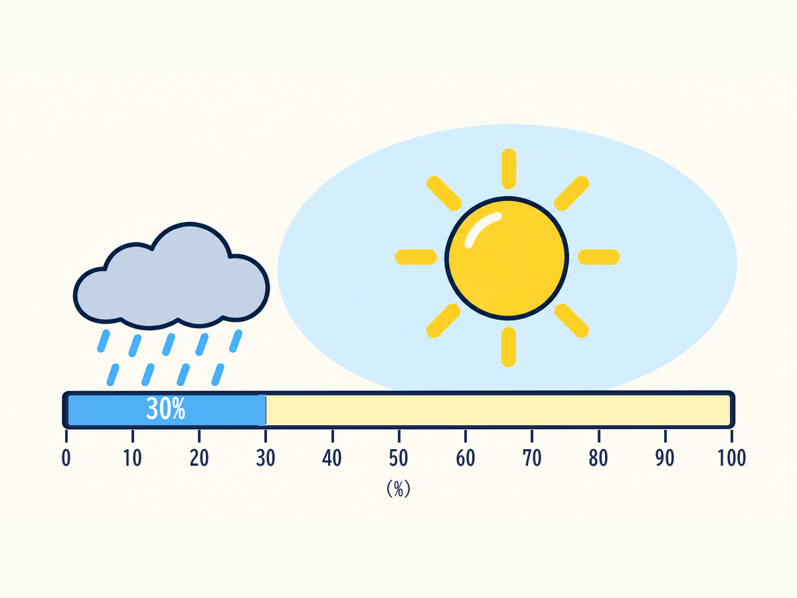
米国の国立気象局（NWS）の数え方は、日本とよく似ていますが同じではありません。NWSのピーチツリーシティ予報所は、降水確率を「予報の地点や格子が0.01インチ以上の雨を受ける確率」と説明しています。40%は「その地点で0.01インチ以上降る確率が40%」という意味で、「40%の時間降る」や「40%の範囲で降る」ではないとしています。0.01インチは約0.25mmなので、日本の1mmよりかなり低い線です。同じ空模様でも、米国の数え方のほうが「降った」と判定されやすくなります。そのため、国の違う数字をそのまま比べることはできません。
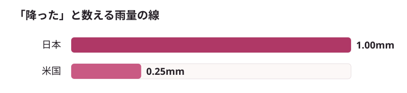
米国では、この確率を「C×A」と分けて説明することもあります。地元テレビ局WRGBの気象予報士による2024年の解説では、Cは予報官が「地域に雨が来る」と考える確かさ、Aは雨が降るときに雨域が覆う範囲の割合です。確かさ50%で範囲80%でも、確かさ100%で範囲40%でも、同じ「40%」になります。後者は夏の雷雨の例として示されています。中身が違う状況が同じ数字で表されるので、「範囲の割合」という誤解がどこから来るのかを説明する材料になります。ただし、この記事はNWSの定義を引用した報道機関の解説で、米国のすべての予報官がこの式で確率を出しているかどうかまでは確認できていません。日本の気象庁の資料には、この式は出てきません。
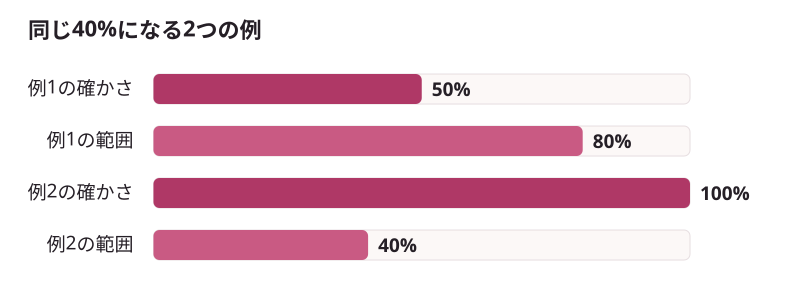
30%は本当に3割降るのか
「100回中30回」という定義が正しく働いているかどうかは、検証して確かめるしかありません。気象庁は5時と17時に発表する天気予報について、6時間ごとの降水確率を10%刻みの階級に分けています。そして、それぞれの階級で実際に1mm以上降った割合を3か月ごとに集計して公表しています。理想的な予報なら、予報値と実際に降った割合が一致し、グラフは傾き1の直線になると説明されています。30%と出した予報の中で実際に約3割降っていれば、「よく合っている」と言えます。
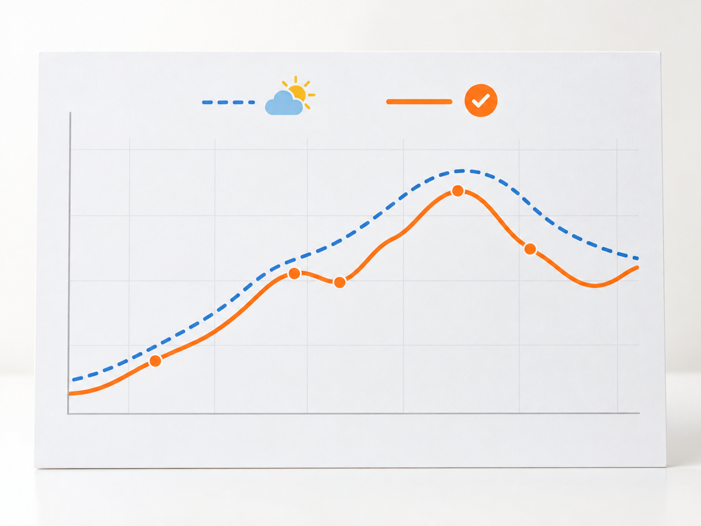
ただし、日本の30%予報で実際に何割降ったのかという数値は、今回の調査では確認できませんでした。気象庁の検証資料はPDFで公表されていますが、資料の本文を読み取ることができなかったためです。動画で「当たっている」「外れている」と言う前に、最新の検証資料のグラフで30%の階級の値を確かめる必要があります。そのときは、対象期間（季節）、全国か地方か、5時・17時発表の6時間単位の予報であることを一緒に示すとよいでしょう。読み方としては、30%の階級の点が傾き1の線より下にあれば、予報値が実際に降った割合を上回っていた（降りやすい側に出ていた）ことになり、上にあればその逆です。また、1つの季節の全国平均だけで、予報全体の傾向や予報官の判断の癖までは決められません。
これとは別に、気象庁は「降水の有無」の当たり具合も毎月公表しています。2026年9月15日に発表された2026年8月の全国の値では、5時発表の今日の予報の適中率が84%、明日が81%でした。17時発表では今夜が88%、明日が82%、明後日が79%で、先の予報ほど下がっています。見逃し率は6～12%、空振り率は7～9%でした。ただしこれは「降るか降らないか」の二択の成績で、確率の数字そのものがどれだけ正しいかを示すものではありません。「適中率8割だから30%も信用できる」とは言いきれない点に注意が必要です。
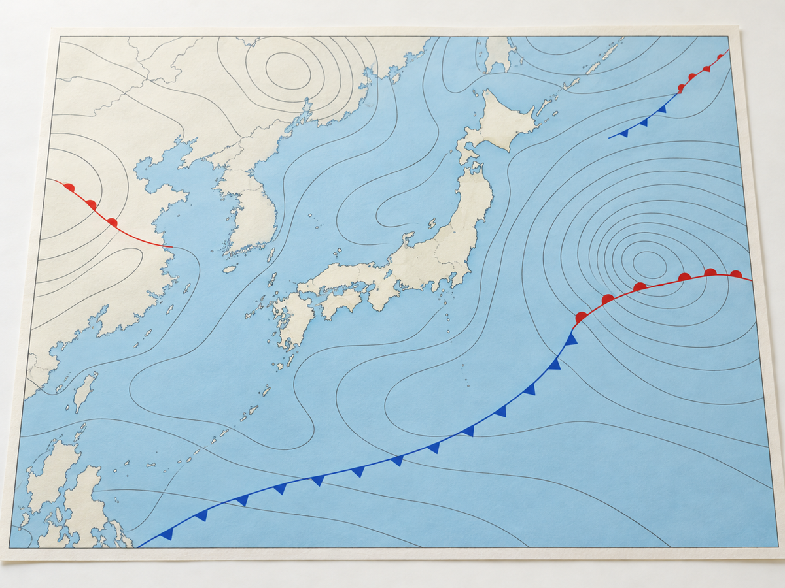
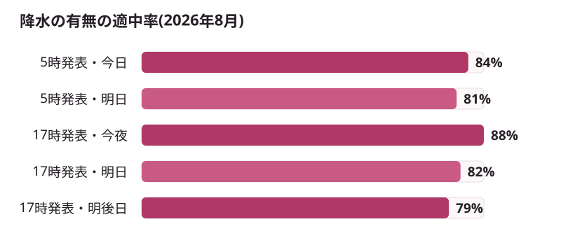
米国では、確率予報の当たり具合を予報の出し手ごとに比べた研究があります。ビッケルとフレアーが2010年の米国気象学会で発表した研究は、全米約800地点で4年間に集めた約1600万件の予報を調べたものです。それによると、ウェザーチャンネルの当日の予報は30%以上ではおおむね実際と合っていましたが、30%未満では降水を多めに予報していました。6日より先の予報では合い方が大きく悪くなり、要旨では、0.5（50%）という予報を避ける傾向が原因とされています。一方、NWSの1～3日先の予報は確率と実際に降った割合がよく対応していましたが、偏りもありました。3日先では、確率が平均で0.06（6ポイント）低く出ていました。翌日の予報ではNWSが最も成績が良く、1%刻みで確率を出すカスタムウェザー社は、10%刻みより細かい分だけ情報が増えると評価されています。
ここからいくつかの限界が見えてきます。まず、確率がどれだけ正しいかは、たくさんの予報を集めて初めて評価できます。30%の日に降らなかったことも、降ったことも、それだけでは予報の失敗の証拠になりません。次に、「どこが出した数字か」で質が変わりえます。米国の調査は2010年発表の研究で用いた4年間のデータで、今の日本の民間の天気アプリにそのまま当てはめることはできません。日本の公的な確率予報については、気象庁が出した値と実際に降った割合を照らし合わせられる検証の仕組みを公開している、という点が強みです。
結論
対象時間（短期は6時間、週間は24時間）に1mm以上降る可能性の予測。30%予報を多数集めて約3割降れば正確と言える。降る時間や範囲、雨量を示す数字ではない。
見解
【事実】気象庁の30%は、短期予報なら6時間、週間予報なら24時間の対象時間に1mm以上降る可能性を予測した値で、雨量は表しません。精度は、同じ確率の予報を多数集め、実際に降った割合と比べて確かめます。2026年8月の全国の降水の有無の適中率は79～88%でしたが、これは確率の正しさとは別の物差しです。米国では0.01インチ以上降る確率を地点ごとに出し、欧州4都市では「時間の3割」などの誤解が多数でした。2010年発表の研究では、ウェザーチャンネルの当日予報が30%未満で降水を多めに予報していました。【見解・推測】30%は「同じ予報を多数集めると3割前後で降る」と読めば十分だと考えます。分かりにくさの主な原因は「何の30%か」が伝わらない点でしょう。動画では①1mm以上、②6時間か24時間の区切り、③多数の予報を集めたときの割合、の3点を示すのが効果的です。一方、日本の30%予報で実際に何割降ったかは今回確認できませんでした。「当たっている」と言う前に、気象庁の最新の検証グラフで30%階級の値を期間と地域付きで確かめるべきです。強い雨の危険は確率では分からないので、雨量予報や警報と併せて見る必要があります。